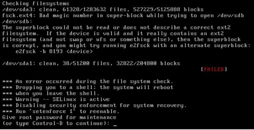
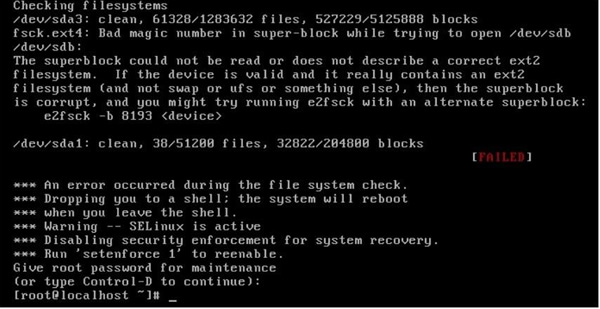
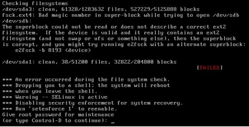
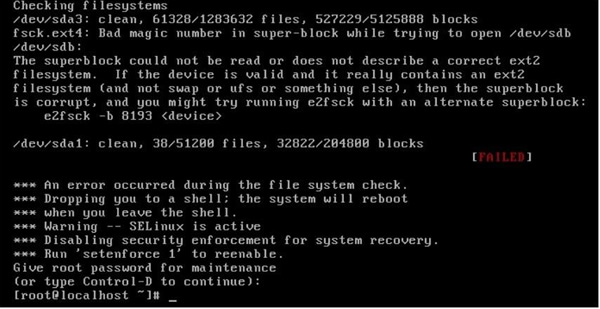

首页 > Linux > Linux文件系统管理
阅读：2,966
修改/etc/fstab文件出错导致Linux不能启动，该怎么办？
如果把 /etc/fstab 文件修改错了，也重启了，系统崩溃启动不了了，那该怎么办？比如：

图 1 系统启动报错
先别急，仔细看看，系统提示输入 root 密码，我们输入密码试试，如图 2 所示。

图 2 root登录
我们又看到了系统提示符，赶快把 /etc/fstab 文件修改回来吧。又报错了，如图 3 所示。

图 3 修改 /etc/fstab 报错
别慌，分析一下原因提示是没有写权限，那么只要把 / 分区重新挂载上读写权限不就可以修改了吗？命令如下：
[root@localhost ~]# vi /etc/fstab
UUID=c2ca6f57-b15c-43ea-bca0-f239083d8bd2 ext4 defaults 1 1
UUID=0b23d315-33a7-48a4-bd37-9248e5c44345 boot ext4 defaults 12
UUID=4021be19-2751-4dd2-98cc-383368c39edb swap swap defaults 0 0
tmpfs /dev/shm tmpfs defaults 0 0
devpts /dev/pts devpts gid=5, mode=620 00
sysfs /sys sysfs defaults 0 0
proc /proc proc defaults 0 0
/dev/sdb5 /disk5 ext4 defaults 1 2
/dev/sdb /disk6 ext4 defaults 1 2
#故意把/dev/sdb6写成了 /dev/sdb

图 1 系统启动报错
先别急，仔细看看，系统提示输入 root 密码，我们输入密码试试，如图 2 所示。

图 2 root登录
我们又看到了系统提示符，赶快把 /etc/fstab 文件修改回来吧。又报错了，如图 3 所示。
图 3 修改 /etc/fstab 报错
别慌，分析一下原因提示是没有写权限，那么只要把 / 分区重新挂载上读写权限不就可以修改了吗？命令如下：
[root@localhost ~]#mount-oremount, rw/
再去修改 /etc/fstab 文件，把它改回来就可以正常启动了。关注微信公众号「站长严长生」，在手机上阅读所有教程，随时随地都能学习。本公众号由C语言中文网站长运营，每日更新，坚持原创，敢说真话，凡事有态度。

微信扫描二维码关注公众号